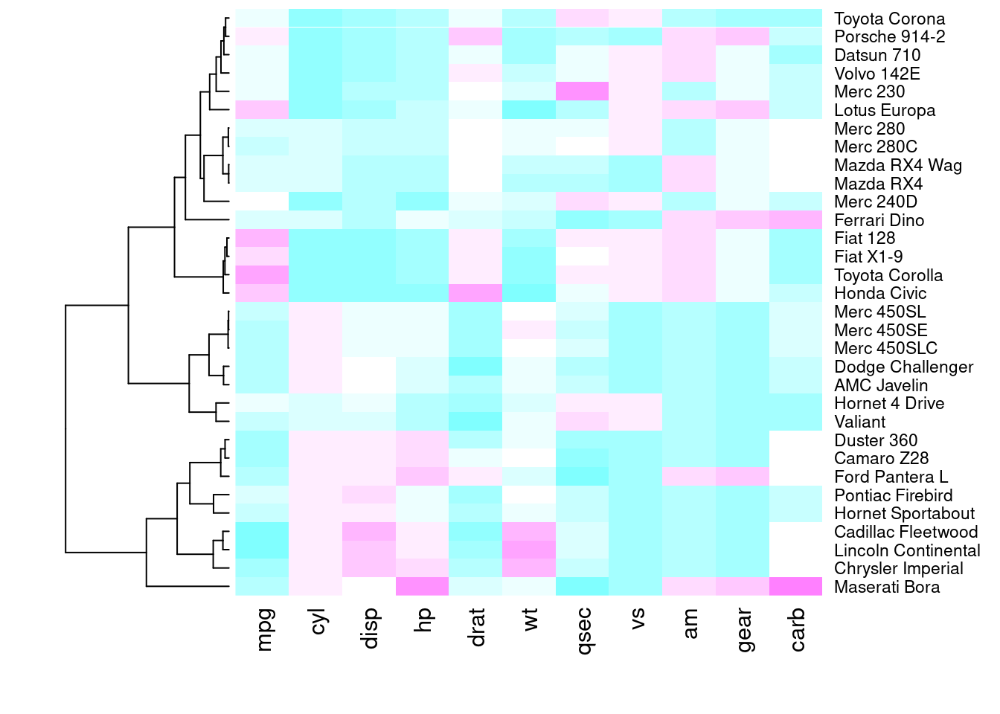
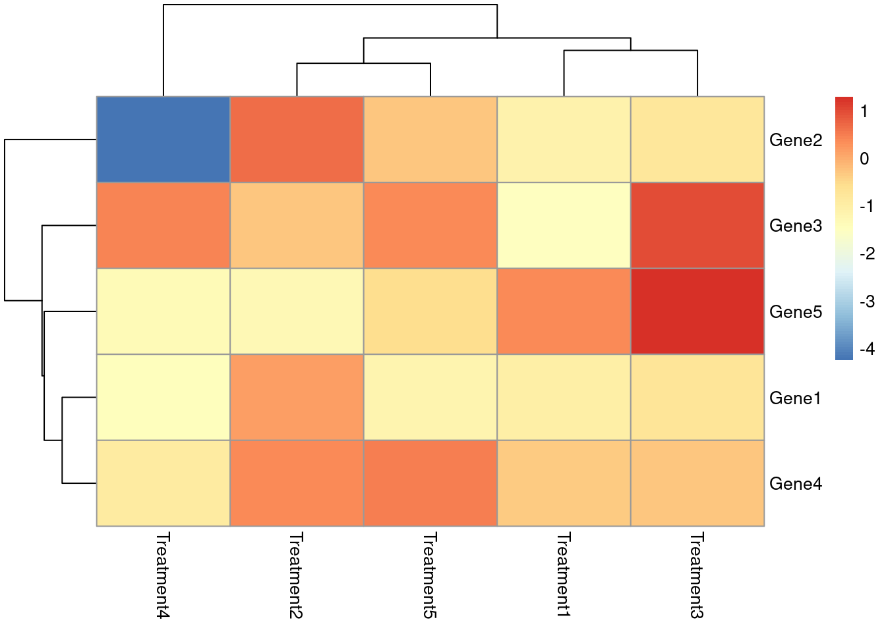
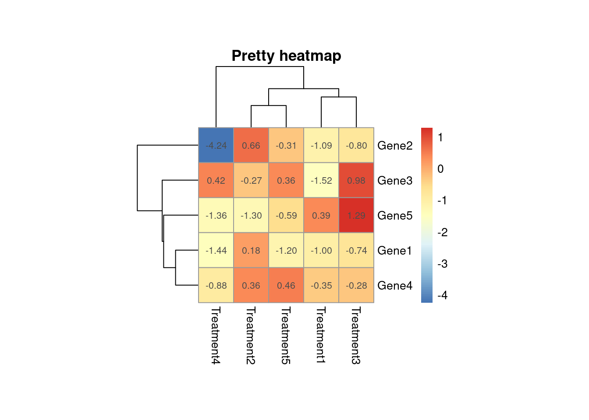
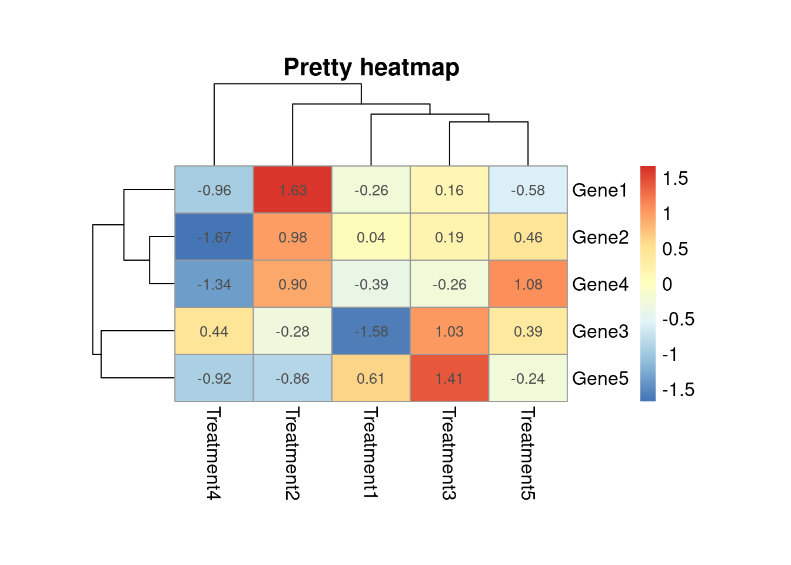

dir.create("scripts")
dir.create("plots")R data visualisation: heatmaps
A heatmap is a way of visualising a table of numbers, where you substitute the numbers with colored cells. It’s useful for finding highs and lows, and see patterns more clearly. There are many functions available in R to create this kind of visualisations, but we will focus on four options here.
What are we going to learn?
During this session, you will:
- Learn how to produce a simple heatmap with the base function
heatmap(); - Learn about alternatives to produce more complex heatmaps, like
heatmap.2()andpheatmap(); - Learn how to produce a rudimentary heatmap with the ggplot2 package.
Disclaimer
We will assume you are an R intermediate user and that you have used RStudio before.
Open RStudio
Installation instructions are available if you don’t have R and RStudio installed already.
- On your own computer:
- Open RStudio
- Make sure you have a working Internet connection
- On Library computers:
- Log in with your UQ username and password
- Make sure you have a working Internet connection
- Open the ZENworks application
- Look for the letter “R”
- Double click on RStudio which will install both R and RStudio
Essential shortcuts
- function or dataset help: press F1 with your cursor anywhere in a function name.
- execute from script: Ctrl + Enter
- assignment operator (
<-): Alt + -
R Project
Everything we write today will be saved in your script, so please remember to create your project on your H drive (or USB stick) if you use the University computers, so you can go back to it after the session.
- Create a new project:
- Click the “New project” menu icon
- Click “New Directory”
- Click “New Project”
- In “Directory name”, type the name of your project, e.g. “heatmaps”
- Browse and select a folder where to locate your project (for example, an “r_projects” directory where all your projects live)
- Click the “Create Project” button
- Create new folders with the following commands:
- Create a new R script called “heatmaps.R” in the “scripts” folder:
file.create("scripts/heatmaps.R")
file.edit("scripts/heatmaps.R")Method 1: the base heatmap() function
As a first example, we will use a built-in dataset called mtcars.
Explore the data
?mtcars
dim(mtcars)
str(mtcars)
head(mtcars)
View(mtcars)Prepare data
The data is a dataframe, but it has to be a numeric matrix to make your heatmap. Dataframes can contain variables with different data classes, whereas matrices only contain one data class.
class(mtcars)[1] "data.frame"mtcars_matrix <- data.matrix(mtcars) # convert a DF to a numeric matrix
class(mtcars_matrix)[1] "matrix" "array" Visualise
We are now going to use the heatmap() function to create our first heatmap:
heatmap(mtcars_matrix)Does it look like what you expected?
Look at the function’s help page, and read the description of the scale argument in particular:
?heatmapScale is important: the values should be centered and scaled in either rows or columns. In our case, we want to visualise highs and lows in each variable, which are in columns.
heatmap(mtcars_matrix, scale = "column")We can now see the high (red) and low (white) values in each variable, and visualise groups of similar cars.
Colours
With versions of R up to 3.5, the default heatmap palette was heat.colors(), which is not the most intuitive as it goes from red for low values to white for high values.
Since R 3.6, the default palette is “YlOrRd”, which stand for “Yellow, Orange, Red”.
You can however replace the default palette and use different colours, and different numbers of levels. For example, in the palette function cm.colors(n), n is the number of levels (>= 1) contained in the cyan-to-magenta palette. This function can be used in the col argument:
heatmap(mtcars_matrix,
scale = "column",
col = cm.colors(n = 15))You can try other functions, like terrain.colors() or hcl.colors() (in R > 3.6), and you can reverse them with the rev = TRUE argument.
Challenge 1: Remove dendrograms
Does it make sense to have both columns and rows for this dataset?
Look at the help documentation for heatmap to see if the dendrograms can be removed for rows and/or columns.
Hint: see the
RowvandColvarguments.
heatmap(mtcars_matrix,
scale = "column",
col = cm.colors(15),
Colv = NA)
If dendrograms are removed, the data won’t be reorganised according to the clustering method.
Clean the environment
We can start with a fresh environment, using:
rm(list = ls())Method 2: gplots::heatmap.2()
If you don’t have the gplots package yet, use install.packages("gplots").
library(gplots)This gplots heatmap function provides a number of extensions to the standard R heatmap function.
?heatmap.2Protein data example
This dataset contains observations for 63 proteins in three control experiments and three experiments where cells are treated with a growth factor. We need to import it from the web:
rawdata <- read.csv("https://raw.githubusercontent.com/ab604/heatmap/master/leanne_testdata.csv")We can then explore the data:
str(rawdata)
head(rawdata)
View(rawdata)It’s important to note that a lot of visualisations involve gathering and preparing data. Rarely do you get data exactly how you need it, so you should expect to do some data munging before producing the visuals.
Here, we need to remove useless columns, and we also want to rename them for clarity.
prot_data <- rawdata[ , 2:7] # remove superfluous columns
colnames(prot_data) <- c(paste("Control", 1:3, sep = "_"),
paste("Treatment", 1:3, sep = "_"))We also need to convert the dataframe to a matrix, just like in our first example.
class(rawdata)[1] "data.frame"prot_matrix <- data.matrix(prot_data)
class(prot_matrix)[1] "matrix" "array" We can now visualise the data with heatmap.2():
heatmap.2(prot_matrix)The
scaleargument inheatmap.2()is by default set to"none"!
For a more informative visualisation, we can scale the data for each protein:
heatmap.2(prot_matrix,
scale = "row")We can now see each protein’s response to treatments.
Notice how the visualisation is more readable, but the clustering does not take into account the scaling? That’s because the scaling is done after the clustering.
With heatmap.2(), if we want to cluster rows according to the scaled data, we have to scale it prior to generating the heatmap.
?scalescale() is a function that centres and scales the columns of a numeric matrix. We transpose the matrix with t() to then centre and scale each protein’s data (i.e. the rows) with scale(). Finally, we transpose the data back to the original form.
prot_scaled <- prot_matrix |>
t() |>
scale() |>
t()Let’s visualise it once more:
heatmap.2(prot_scaled)We can now see clear groups.
More control over colours
Let’s create a new palette function:
my_palette <- colorRampPalette(c("blue",
"white",
"red")) # from low to highNow, we can use it and further customise our heatmap:
heatmap.2(prot_scaled,
trace = "none", # turn off trace lines from heatmap
col = my_palette(25)) # use my colour scheme with 25 levelsFix a few things and add a few extras:
heatmap.2(prot_scaled,
Colv = FALSE, # no clustering on columns
trace = "none",
col = my_palette(25),
main = "Protein abundance", # add title
margins = c(6, 3), # more space from border
keysize = 2, # make key and histogram bigger
cexRow = 0.4, # amend row font
cexCol = 0.8) # amend column fontWarning in heatmap.2(prot_scaled, Colv = FALSE, trace = "none", col =
my_palette(25), : Discrepancy: Colv is FALSE, while dendrogram is `both'.
Omitting column dendogram.
To suppress the warning, you can also specify which dendrogram you want to show:
heatmap.2(prot_scaled,
Colv = FALSE,
dendrogram = "row", # only show the row dendrogram
trace = "none",
col = my_palette(25),
main = "Protein abundance",
margins = c(6, 3),
keysize = 2,
cexRow = 0.4,
cexCol = 0.8)Clean up the environment with:
rm(list = ls())Method 3: pheatmap::pheatmap()
If you don’t have it already, install pheatmap with install.packages("pheatmap").
Load the required package with:
library(pheatmap)How does pheatmap() (which stands for “pretty heatmap”) differ from other functions?
?pheatmapA function to draw clustered heatmaps where one has better control over some graphical parameters such as cell size, etc.
Create a data matrix from pseudo-random numbers:
d <- matrix(rnorm(25), nrow = 5)
colnames(d) <- paste0("Treatment", 1:5)
rownames(d) <- paste0("Gene", 1:5)Try it out:
pheatmap(d)
By default, pheatmap adapts to the available space. You can however fix the size of the cells, for example to squares:
pheatmap(d,
main = "Pretty heatmap",
cellwidth = 30,
cellheight = 30,
fontsize = 10,
display_numbers = TRUE)
By default, the
scaleargument is set to"none". If you do scale the data, the clustering will take it into account (i.e. the clustering happens after the scaling).
pheatmap(d,
main = "Pretty heatmap",
cellwidth = 50,
cellheight = 30,
fontsize = 12,
display_numbers = TRUE,
scale = "row")
You can save your plot with an extra argument:
pheatmap(d,
main = "Pretty heatmap",
cellwidth = 50,
cellheight = 30,
fontsize = 12,
filename = "plots/heatmap.pdf")Clean up your environment with:
rm(list = ls())Summary of first three methods
The first three methods differ in their default settings and in the order of the processing steps:
stats::heatmap(): scale (row) -> cluster -> colour
gplots::heatmap.2(): cluster -> scale (none) -> colour
pheatmap::pheatmap(): scale (none) -> cluster -> colourMethod 4: a dataframe in ggplot2
If you want to stick to the ggplot2 package for all your data visualisation, there is a way to create a simple heatmap (without clustering). So far, we have seen methods that make use of data matrices; however, ggplot2 deals with dataframes that contain “tidy data”.
If you don’t have ggplot2 installed on your system, you can do that with the command install.packages("ggplot2").
Load the necessary library:
library(ggplot2)We are using a built-in dataset about oesophageal cancer occurrence: esoph.
?esophLet’s subset the data we want to look at, i.e. only 55-64 year-olds:
esoph_sub <- subset(esoph, agegp == "55-64")Create a basic heatmap from the dataframe:
ggplot(esoph_sub, aes(x = alcgp,
y = tobgp,
fill = ncases / (ncases + ncontrols))) +
geom_tile() +
scale_fill_gradient(low = "white",
high = "darkred") +
theme_minimal() +
labs(fill = "Cancer freq.",
x = "Alcohol consumption",
y = "Tobacco consumption")This ggplot2 method does not allow to create dendrograms. However, other packages are based on ggplot2 and support dendrograms. (Search for “heatmap” in the ggplot2 extension gallery.)
Clean up your environment with:
rm(list = ls())(optional) Method 5: ComplexHeatmap::Heatmap
This extra method come from a different repository than the official CRAN repositories: the Bioconductor project.
The package we use is the ComplexHeatmap package, which is fully documented here.
Step 1: install and load
BiocManager is used to install Bioconductor packages.
# install.packages("BiocManager")
# BiocManager::install("ComplexHeatmap")
library(ComplexHeatmap)Loading required package: grid========================================
ComplexHeatmap version 2.26.0
Bioconductor page: http://bioconductor.org/packages/ComplexHeatmap/
Github page: https://github.com/jokergoo/ComplexHeatmap
Documentation: http://jokergoo.github.io/ComplexHeatmap-reference
If you use it in published research, please cite either one:
- Gu, Z. Complex Heatmap Visualization. iMeta 2022.
- Gu, Z. Complex heatmaps reveal patterns and correlations in multidimensional
genomic data. Bioinformatics 2016.
The new InteractiveComplexHeatmap package can directly export static
complex heatmaps into an interactive Shiny app with zero effort. Have a try!
This message can be suppressed by:
suppressPackageStartupMessages(library(ComplexHeatmap))
========================================
! pheatmap() has been masked by ComplexHeatmap::pheatmap(). Most of the arguments
in the original pheatmap() are identically supported in the new function. You
can still use the original function by explicitly calling pheatmap::pheatmap().
Attaching package: 'ComplexHeatmap'The following object is masked from 'package:pheatmap':
pheatmaplibrary(circlize) # for the colorRamp2() function========================================
circlize version 0.4.17
CRAN page: https://cran.r-project.org/package=circlize
Github page: https://github.com/jokergoo/circlize
Documentation: https://jokergoo.github.io/circlize_book/book/
If you use it in published research, please cite:
Gu, Z. circlize implements and enhances circular visualization
in R. Bioinformatics 2014.
This message can be suppressed by:
suppressPackageStartupMessages(library(circlize))
========================================How is the Heatmap() function different to the base heatmap()?
?HeatmapStep 2: create and manipulate data
Create a data matrix:
See this StackOverflow article on the importance of setting a seed.
set.seed(123)
mat <- cbind(rbind(matrix(rnorm(16, -1), 4),
matrix(rnorm(32, 1), 8)),
rbind(matrix(rnorm(24, 1), 4),
matrix(rnorm(48, -1), 8)))Permute the rows and columns:
mat <- mat[sample(nrow(mat),
nrow(mat)),
sample(ncol(mat),
ncol(mat))]
rownames(mat) <- paste0("R", 1:12)
colnames(mat) <- paste0("C", 1:10)Step 3: make a heatmap
Heatmap(mat)Modify the colour and the labels, remove dendrograms (and don’t cluster the data):
Heatmap(mat,
col = colorRamp2(c(-3, 0, 3),
c("brown", "white", "yellow")),
cluster_rows = FALSE,
cluster_columns = FALSE,
heatmap_legend_param = list(title = "Values"))The cluster_ arguments can take external clustering information, which means you can use any type of clustering method.
Now, let’s see how this function deals with missing values:
mat_with_na <- mat
mat_with_na[sample(c(TRUE, FALSE),
nrow(mat)*ncol(mat),
replace = TRUE,
prob = c(1, 9))] <- NA
Heatmap(mat_with_na,
col = topo.colors(100),
na_col = "orange",
clustering_distance_rows = "pearson",
heatmap_legend_param = list(title = "Values"))Warning: NA exists in the matrix, calculating distance by removing NA values.Heatmap() automatically removes NA values to calculate the distance.
We can also reorganise dendrograms and labels:
Heatmap(mat,
name = "abundance",
row_names_side = "left",
row_dend_side = "right",
column_names_side = "top",
column_dend_side = "bottom")To separate clusters, we can use the km argument, which allows k-means clustering on rows.
Heatmap(mat,
name = "abundance",
row_names_side = "left",
row_dend_side = "right",
column_names_side = "top",
column_dend_side = "bottom",
km = 2)We can add options, save the base plot as an object and then slightly modify if with the draw() function:
h1 <- Heatmap(mat,
name = "abundance",
col = topo.colors(50),
color_space = "sRGB",
row_dend_width = unit(1, "cm"),
column_dend_height = unit(1, "cm"),
row_dend_reorder = TRUE,
column_dend_reorder = TRUE,
row_names_gp = gpar(fontsize = 7),
column_names_gp = gpar(fontsize = 9),
column_names_max_height = unit(2, "cm"),
row_names_max_width = unit(9, "cm"),
column_title = "This is a complex heatmap")
draw(h1, heatmap_legend_side = "left")Clean my environment with:
rm(list = ls())Close R project
When closing RStudio, you should be prompted to save your workspace. If your script contains all the steps required to generate your data and visualisations, it is best practice to not save your workspace: you can execute the whole script when you go back to your project.
Further resources
- More on R heatmaps:
- More heatmap packages:
- Full reference on ComplexHeatmap
- tidyHeatmap, built on ComplexHeatmap but for tidy data
- tidyheatmaps, built on pheatmap but for tidy data
- iheatmapr, for richer interactive heatmaps
- Search for “heatmap” in the ggplot2 extension gallery
- Our compilation of R resources